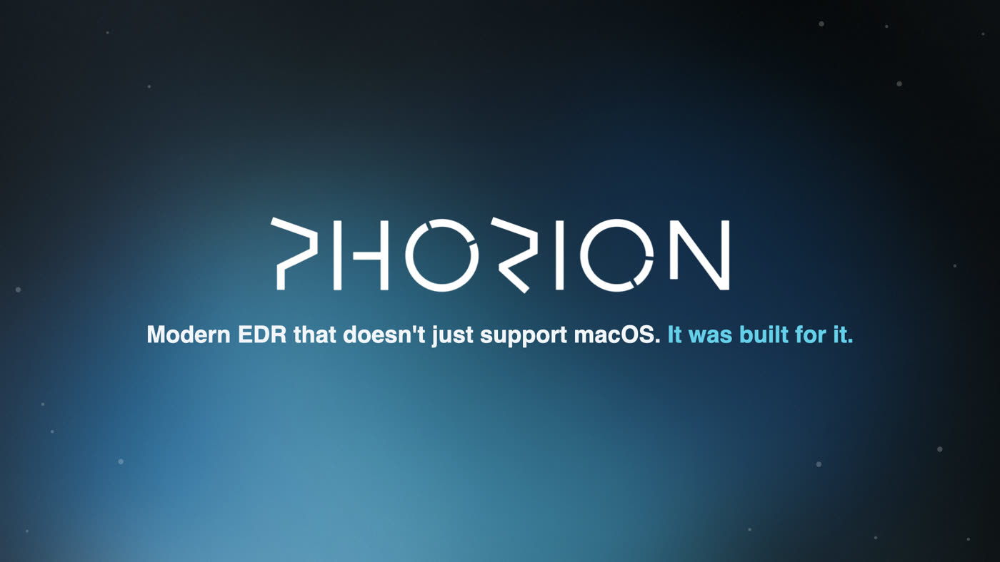
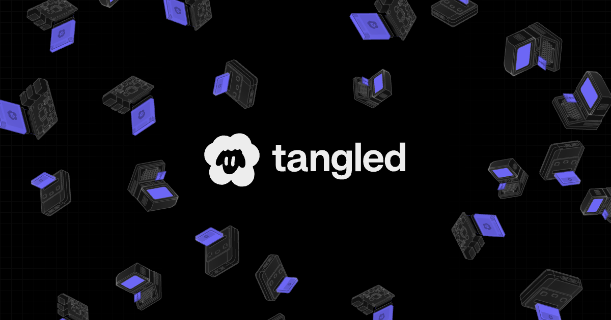
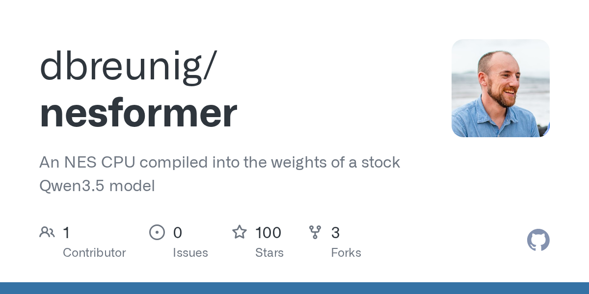
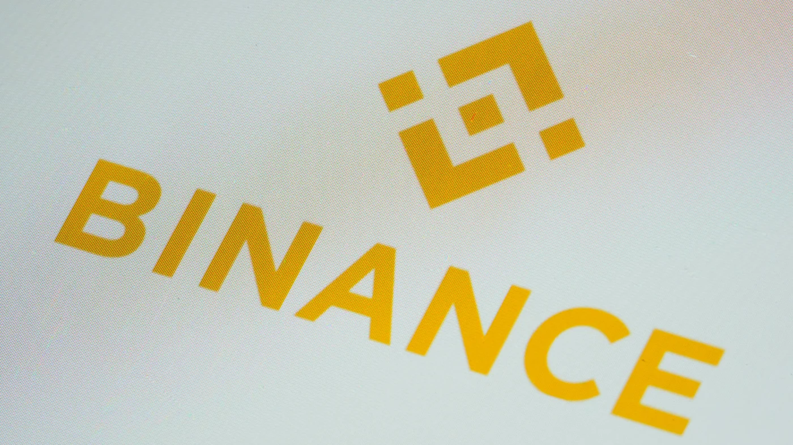
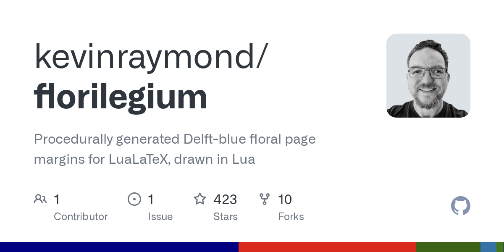

The front page, read closely and set in type — a briefing for Keegan
Compiled from news.ycombinator.com
Friday, October 30, 2026
Every fact checked; every joke earned
Security Desk · The Lead · Follow-UpBackdoor advisory leads the pageThe full technical write-up on the backdoored Claude Code extension tops the front page at 625 points — 283 more than this morning’s first reports — and Cursor now confirms two malicious versions, 2.1.312 and 2.1.313, and an attacker server taken offline.
Security Desk · BreachesNorthflank: assume every secret readA Wiz threat alert at 11:43 UTC opened the platform’s worst day. By 19:28 UTC the guidance was unchanged — rotate everything, including AI keys, and disable public addon access; the mechanism is still unconfirmed.
AI Desk · The LedgerAnthropic may list as junk-ratedBlackstone now tells investors to expect a “high” junk rating after the IPO, per the FT — a reversal of its earlier guidance that helped send the Nasdaq 100 down 3.7 percent in Friday trading.
Security Desk · AttributionNorth Korea tied to $6.36B Binance theftTRM Labs assigns the heist to the TraderTraitor unit “with high confidence”; about $3 billion is frozen with partners. The tally has grown from this morning’s $5.6B to $6.3B.
Lead Story · Security Desk · Follow-Up
The Claude Code Backdoor, in Full: An SSH Key Named “svc-telemetry,” Two Malicious Versions, and an Attacker Server Now Dark
Phorion’s advisory — first reported on this morning’s wire at 342 points, now the page’s lead at 625 — walks the implant end to end; Cursor confirms versions 2.1.312 and 2.1.313 were live from 2:27 a.m. to 1:35 p.m. PT, were “not developed by Anthropic,” and that the operator’s server has been taken offline
Security Desk★ 625 pts · ▲ +283 since the last edition
LONDON — The complete anatomy of the backdoored Claude Code extension, first flagged on this morning’s wire at 342 points[22] and now the front page’s lead story at 625, was published by Phorion Technology — the London-registered (EC1V 2NX) security firm of co-founder and chief executive Calum Hall[1] — and its infection chain is now fully itemized[1][2]: an immediately-invoked function expression prepended to the minified extension.js bundle, pulling in Node’s child_process, fs, os, path, http and crypto modules, and executing the moment Node loads the file — before the extension’s own activate callback runs, with no user interaction required. Stage one appends an attacker-controlled Ed25519 public key — comment field “svc-telemetry” — to ~/.ssh/authorized_keys, then works to switch the local SSH daemon on and beacon host reconnaissance to the operator[1].

The advisory’s own summary card: a persistent SSH backdoor across macOS, Linux and Windows. Phorion.io
Cursor’s own security notice, published alongside, supplies what the morning reports lacked[3]: two malicious versions — 2.1.312 and 2.1.313, for Windows and macOS — were available in the Cursor VS Code Extension Marketplace from about 2:27 a.m. to 1:35 p.m. PT, and “were not developed by Anthropic.” The exfiltrated data is listed precisely: hostname, username, OS, architecture, home-directory path, environment variable names, working directories, configured Git email, and public IP. The reverse SSH tunnel “would fail” except where Cursor was started with administrator privileges — but the key, the persistence (a LaunchAgent on macOS; a scheduled task attempting to run as SYSTEM on Windows, retrying roughly every 60 seconds) and the host-detail upload landed regardless. The attacker’s server no longer functions: Cursor worked with the hosting cloud provider to take it offline, then shut the marketplace down entirely, audited it, rotated its keys, rebuilt it and brought it back[3].
The macOS flaw in the malware survives the second telling: the payload checks Remote Login by running systemsetup -getremotelogin, which — run as a standard user — prints an administrator-access error and exits with status 0 instead of returning “Off,” so the script skips the enablement step entirely on Macs not already running SSH[1]. The thread’s open question is scope: one reader asks whether the incident touches “only people using Cursor or all VS Code users,” noting the same version number was pulled from the official VS Code Marketplace and npm[2] — Phorion attributes the compromise to the Cursor Marketplace listing, and Cursor says it has “no evidence that other versions of the extension or the official distribution are affected”[3]. Guidance, updated from morning: review environments for Claude Code for VS Code 2.1.313 — and now 2.1.312 — and engage incident response where the extension is found[1].
Culture Desk · The Engine Room
The Case That AI Deskills SREs Rests on a 1983 Paper About Factory Floors
Culture Desk★ 392 pts · 300 cmts
The day’s second-largest story is a newsletter argument with an old spine: Lisanne Bainbridge’s 1983 paper “Ironies of Automation,” among the most-cited in human-factors research, repurposed for on-call engineers[4]. The SigNoz newsletter’s framing question: when AI handles 95 percent of your incident response, “do you get worse at handling the 5% that actually matters?” Bainbridge’s finding — the more a process is automated, the more critical the human operator becomes in the rare moments the automation fails, and the less practice that operator gets — is mapped onto the already-automated tier of reliability work: alert grouping, runbook execution, log-pattern detection and auto-remediation of known failure modes[4].
The newsletter’s illustration, from its summary card. Substackcdn.com
The thread’s 300 comments file mostly affidavits. One reader watched colleagues spend two hours steering an agent at a fault that was “blindingly obvious” to anyone who had not gone to the model first, and drew the dependency conclusion: a shop that debugs with the model is hostage to the model’s uptime[5]. Another puts the power asymmetry flatly: “At this point a company can effectively fire you by taking away access the Enterprise LLMs.”[5] Pushback is present and specific: AI is “already pretty good” at multi-signal correlation across metrics, logs and traces, and “half decent” at change-risk assessment, one practitioner counters[5] — the deskilling argument, the thread agrees, turns on the 5 percent, not the 95.
AI Desk · The Ledger
Blackstone Now Expects a “High” Junk Rating for Anthropic After Its IPO
AI Desk★ 187 pts · 133 cmts
The Financial Times’s report — the paper’s paywall turned this newsroom away, so the text is taken from the full article posted in the thread by a reader[6][7] — says Blackstone has told investors in Anthropic’s latest $63 billion chip-financing deal, “Project North Star,” that the company is expected to receive a “high” junk rating from major credit agencies after its initial public offering, a reversal of its guidance that an investment-grade rating would arrive before year-end[6]. The mechanics matter more than the label: a rating in the double-B range would shrink the pool of capital Anthropic can tap, because many insurance companies and pension funds are restricted from large positions in junk-rated borrowers[6].
The numbers in play, per the same text: Anthropic filed to go public on Monday, setting up what could be the largest listing of all time; it holds more than $112 billion in cash and equivalents; investors anticipate roughly $100 billion more raised in the IPO; and its prospectus sketches “bold but sane” plans to spend more than $800 billion on computing infrastructure through 2045[6]. North Star finances the lease of 1.5 gigawatts of Google’s semiconductors, with $42 billion of senior loans guaranteed by Broadcom and $18 billion of junior debt backed by Anthropic’s lease payments — $9 billion of that junior debt held by Blackstone funds at a yield above 10 percent[6]. US tech stocks slid to session lows after the report, the Nasdaq 100 down 3.7 percent Friday afternoon, on a day already lowered by Amazon and Intel earnings; a tech portfolio manager, quoted: “It’s all about access to credit… if [Anthropic] isn’t investment grade, the cost of credit goes higher, that’s not good for anyone.”[6]
The Listing, by the Numbers
Chip financing deal (“Project North Star”)
$63B
Compute spend planned through 2045
>$800B
Cash and equivalents on hand
>$112B
Anticipated raise in the IPO
≈$100B
Senior loans guaranteed by Broadcom
$42B
Junior debt held by Blackstone funds
$9B, >10%
Nasdaq 100, Friday afternoon
−3.7%
Tools Desk · Open Source
Tangled Rebuilds the Code Forge on an Open Protocol, With Issues Stored in the Repository Itself
Tools Desk★ 169 pts · 59 cmts
Tangled, a code forge built on the AT Protocol — the open protocol behind Bluesky — shipped the release its blog calls “the first truly federated code forge”: host code on your own servers and still collaborate with everyone else, self-hosting as much or as little of the stack as wanted — Git hosting, CI runners, or the entire API server and UI[8]. The rearchitecture is concrete: a new Svelte frontend deployed at the edge, fed by “bobbin,” a diskless, entirely in-memory indexer written in Rust deployed across 11-plus regions — replacing a single Go monolith that ran one SQLite database on “one medium-sized server in Sweden” — plus “knot2,” a second-generation knot server rewritten in Rust with a fully custom Git server and an SSH server in the same binary[8].

The launch card: 2005 mail plus Git, 2009 GitHub plus Git, 2025 AT Protocol plus Git. Tangled.org
The structural bet is where the issues live: pull requests, comments, reactions and labels are now “collaborative objects” — chains of Git objects stored in the repository itself, signed, full history included, and synced across the network via the standard firehose, much as a protocol data server holds records[8]. Co-founder “icy” answered questions in the thread: organizations have shipped, and private repositories roll out “in the following couple weeks”[9]. A reader whose Neovim plugin is hosted on Tangled reported federation’s inherited failure mode — the plugin’s backing knot went down, and nothing on the site made clear whose server was the problem[9] — and another asked the migration question straight: no SHA-256 repository support yet, “when Git 3 is moving to SHA256 anyway”[9].
Hardware Desk · Retro Iron
Classic Mac OS Brought Up on a Nintendo Wii — by Hand, Without a Coding Agent
Hardware Desk★ 152 pts · 40 cmts
A guest post at Virtually Fun, by the developer Rairii, documents reaching the desktop with classic Mac OS on the GameCube and Wii line of chipsets — the GameCube’s Flipper integrated chipset was “very much designed by ArtX,” effectively finished before ATI acquired the company, with the Wii’s Hollywood and the Wii U’s Latte as its successors — which the author calls most likely the first time since the CHRP clone era that someone outside Apple brought classic Mac OS up on a new system to the desktop[10]. The project began 2025-06-22 and required porting OpenBIOS and patching the “Trampoline” bootloader’s assumptions about the physical address space; the author states plainly, in a year of agent-written code: “no kind of coding agent or LLM was used, all coding, reversing and debugging work done by myself”[10].
Details for the faithful: disk drivers were written for the EXI bus — Nintendo and Macronix’s name for SPI — including the SD Gecko, a straight-through SD adapter for the GameCube memory-card slot[10]. The m68k part of the TBXI bootloader has carried the name “SuperMario” for the entire PowerPC era, a fact the author declines to call a coincidence[10]. The thread supplies context around the milestone: modern macOS “still has classic Mac OS code in it” dating back as far, one reader notes; another points to Open Shop Channel and WiiLink as the homebrew on-ramps keeping the hardware in service[11].
AI Desk · Show HN
A 6502 CPU Compiled — Not Trained — Into a Stock Qwen Model
AI Desk★ 138 pts · 95 cmts
The Show HN bench offers the day’s strangest working demo: nesformer runs the NES’s 6502 CPU (the core of its 2A03 chip), its 2 KB of work RAM, and a cartridge’s program ROM inside a standard Qwen3_5ForCausalLM checkpoint — and “nobody trained these weights; a compiler computed every one”[12]. Play a game and the model predicts the CPU’s execution log one token at a time, while a small host program plays the rest of the console around it: drawing the picture, reading the controller, firing the vblank interrupt[12]. The project builds on Qwenputer by Divyansh Agrawal — which compiled a CHIP-8 and then a RISC-V core into Qwen3.5-4B — and reuses its central trick: the model’s Gated DeltaNet state serves as the machine’s memory[12].

The repository’s card. Opengraph.githubassets.com
The checking is the substantive part: for the bundled test games, “every frame also matches a conventional 6502 emulator’s output exactly”[12]. The thread splits along the familiar seam — a longtime reader of this page loves the hack while finding it “horrifying” to an “assembly-code-golfing-brain”; another shrugs that digital logic reducible to weights was never in doubt; and the operational question gets asked plainly: “How do they know it’s ‘working’? Did they test every possible input/output combination?”[13] The frame-matching claim is the answer on offer[12].
Security Briefing · Platform Breach
Northflank’s Day, on the Record: “Assume All Environment Variables Have Been Decrypted”
Security Desk★ 275 pts · 195 cmts
The platform’s own status page carries the sequence, timestamped: a Wiz threat alert at 11:43 UTC today, engineer review one minute later, initial network-policy patching from 12:02, Wiz CIRT support requested at 13:00 — and by 13:58 UTC the state “Identified,” with the instruction that gives this story its headline: assume all environment variables have been decrypted; disable and rotate every key, across workloads, secret groups and global secrets[14]. At 15:12 UTC, secret rotation for Postgres and MongoDB was enabled for all users, with public addon exposure recommended off; by the 19:28 UTC update the investigation was still open, with “no further confirmed findings” and guidance unchanged — the page also records that multiple users are confirming their AI keys have been used[14].
The thread is largely damaged parties doing arithmetic. One user with “a throwaway appstore app” that uses Northflank for its backend now faces rotating RevenueCat, Apple and AI secrets “for an app with basically 2 users”[15]. The structural read, after Railway’s breach before this one: incidents like these will drive “a convergence back to hyperscalers,” one reader predicts — “there’s no amount of ‘nicer to use’ that can replace security, at least certainly when selling to enterprises”[15]. Northflank has not published the intrusion mechanism.
Security Briefing · Cloud Tenants
Five More Cross-Tenant Paths in Azure’s API Connections, and $200,000 in Bounties
Security Desk★ 231 pts · 40 cmts
Binary Security’s third entry in its “Azure’s Weakest Link” series documents five vulnerabilities in API Connections — the Azure Logic Apps feature whose key-exchange architecture can be steered into using a victim’s connection token against the victim’s backend — each yielding what the post calls the same primitives: cross-tenant compromise of Key Vaults and Azure SQL databases, or any externally connected service “such as Jira or Salesforce.” The vulnerabilities “netted me a cool $200,000” from Microsoft, and the work was presented at Blue Hat Asia 2026[16].
The weakness is structural: what stands between an attacker and another tenant’s connection is “really the layers of input validation bolted onto the various systems” — catching every edge case around the ARM REST API’s DynamicInvoke and /extensions/proxy/ endpoints is, in the author’s judgment, “really difficult”[16]. The thread classifies the bugs — path traversal and IDOR, “likely been active since the inception of these capabilities,” one reader writes — and notes the reporting asymmetry: as an outsider with a working chain, “$$$”; as an employee with “theoretical” findings, “a lot of questions as to why you were looking”[17].
Security Briefing · Attribution
TRM Links the Binance Heist to North Korea’s TraderTraitor; the Tally Reaches $6.36 Billion
Security Desk★ 160 pts · 104 cmts
The attribution this morning’s heist coverage lacked has landed, via an AP report carried by NPR: TRM Labs assigns the Binance theft to TraderTraitor, which it describes as North Korea’s elite hacking unit, “with high confidence” — and measured the event precisely: “An attacker moved approximately USD 6.36 billion out of Binance wallets on ten blockchains, most of it in about 20 minutes,” which would make it the largest cryptocurrency theft on record[18]. Chainalysis co-founder and CEO Jonathan Levin wrote that his firm also believes the hack was “likely done by DPRK group TraderTraitor”[18]. Binance says it worked with partners to freeze roughly $3 billion in affected assets, that deposits were unaffected, that suspended withdrawals are expected to resume “in the next day or two,” and that it will cover all losses[18].

The exchange’s logo on a smartphone, February 2023, Marple Township, Pa. Npr.brightspotcdn.com / AP
Mechanism, per the same report: an initial investigation suggested a compromised laptop; a subsequent one uncovered additional “points of breach,” though the company says it has found “no evidence of any wallet private key leak.” Kok Tin Gan, co-founder and CEO of NyxLab, reads it as “one signature that gave the attacker a never-expiring, full-access token to a Binance hot wallet.” Changpeng Zhao posted that “User funds are safe!” while conceding the theft “does look like a hack on Binance”[18][19]. The FBI attributed last year’s $1.5 billion Bybit theft to the same unit, TRM notes[18].
Practical Tech Corner · The Margins
Florilegium: A Garden in the Page Margins, Computed Petal by Petal
Language Desk★ 149 pts · 25 cmts
The quietest item on the page is also its most meticulous: florilegium draws Delft-blue floral page margins for LuaLaTeX with “no images, no imported paths, no external assets” — “every petal, leaf and stem is a parametric curve computed in Lua while the page is being written, painted like a watercolor, and written straight into the PDF. Every page gets its own garden.”[20] Two compositions ship: an authored one, with hand-placed stems, leaves and flowers and every parameter sampled, and a grown one that fills whatever space the text leaves free through a greedy space-filling loop whose core idea borrows from a 1998 paper in the ornament literature[20].

The repository’s card, in Delft blue. Opengraph.githubassets.com
The margins read the document around them. A macro sets a paragraph’s first letter in a tile five lines tall — the letter’s outline is read from an OpenType font and painted like a petal, with a vine passing over and under its strokes in turn — and the “sections” option puts a flower beside every numbered heading[20]. Growth is recorded while the page is laid out and replayed as a roughly 45-second film (make grow-6)[20]. The thread’s response is nearly uniform gratitude — one reader admits having “no idea you could do animations in Latex/PDF,” and another, “completely disillusioned with software” of late, reports feeling “marginally better” on seeing it[21].
Quote of the Day
“An attacker moved approximately USD 6.36 billion out of Binance wallets on ten blockchains, most of it in about 20 minutes.”TRM Labs, blockchain intelligence firm · via AP / NPR
The measurement underneath the day’s headline number, from the attribution report of the year’s largest theft.[18]
Classifieds — Rates: 1 Karma per line
INVESTMENT OPPORTUNITY: $9 billion of junior debt, yield above 10 percent; borrower expected to open as junk-rated after listing. Anchor inquiries: Blackstone.[6]
TRADE: one Nintendo Wii, now reaches the classic Mac OS desktop. No coding agent was used in the making of this machine.[10]
FOR LEASE: 6502 CPU, 2 KB RAM, cartridge ROM — inside one stock Qwen checkpoint. Frame-accurate; controller, picture and interrupts provided by host.[12]
Also on the Wire
Breaking the open web won’t stop the bad bots
118 · 46
GitHub incident: Actions, Pages, webhooks
115 · 43
Sleep framework: LLMs retain knowledge
114 · 9
How do you take a picture of a black hole?
69 · 53
Front-page candidates at snapshot, points · comments, outside today’s ten. The second wire was not needed — nine fresh stories qualified on their own.
The Box Score — Front Page by the Points
Day in One Line
An afternoon of incident response: the supply-chain backdoor’s full advisory led at 625 points, three further breach and attribution stories filled the Security Briefing, and the biggest story outside the desk was a newsletter arguing that the people left to handle the 5 percent of incidents AI cannot are getting worse at it.
Front Page Ledger — This Edition
Fresh stories · Follow-ups · In digest
9 · 1 · 0
Combined points (10 stories)
2,478
Combined comments
1,406
Most-discussed story
415 cmts
Lead’s margin over No. 2
233 pts
Snapshot
≈21:00 UTC
Corrections & Clarifications
“$6.3B hack” — moved, impacted, lost. This morning’s submission said $5.6 billion stolen; the AP now reports “approximately $6.3 billion was impacted,” and TRM measured $6.36 billion moved out of wallets, of which roughly $3 billion is frozen. Three verbs, three numbers; only the frozen figure is firm so far.[18]
“Official” Claude Code extension. The advisory concerns the listing on Cursor’s marketplace. Cursor says the malicious 2.1.312/2.1.313 builds “were not developed by Anthropic” and it has “no evidence that other versions of the extension or the official distribution are affected” — “official” names the extension, not Anthropic’s own publishing pipeline, a distinction the thread kept returning to.[3][2]
“Northflank Breached” outruns the status page. What Northflank has confirmed is a Wiz alert, patching, and guidance to assume environment variables were decrypted; at 19:28 UTC it reported “no further confirmed findings” and has published no intrusion mechanism. “Breached” is shorthand; “assume compromised” is the company’s word.[14]
Azure’s “Five Full Cross-Tenant Compromises” — demonstrated, not suffered. The five are vulnerabilities the researcher exploited and was paid $200,000 to report through the bounty process; the post describes capability, not five breaches that occurred. The headline’s noun invites the confusion.[16]
Publisher’s Note
The edition leads with the full advisory on the Claude Code extension backdoor, a follow-up to this morning’s first reports at nearly double the score, and gives three more breach and attribution stories to the Security Briefing. The Financial Times’s paywall turned this newsroom away, so that story is typeset from the article text a reader posted whole in the thread; the lead image was resampled from its source card to keep the page light. Nothing else was degraded, and the day closes with flowers in the margins.
— The Herald
Phorion — “Official Claude Code Extension Compromise: Security Advisory” (Calum Hall; Phorion Technology Ltd, London EC1V 2NX) — phorion.io
Financial Times — “Anthropic may not secure investment-grade rating after IPO, Blackstone says” (paywalled; full text as posted by a reader in the thread) — ft.com
Methodology — Snapshot of the Hacker News front page taken ≈21:00 UTC on Friday, October 30, 2026 (16:00 US Central — Afternoon Edition), via the Algolia HN Search API (tags=front_page; 30 items returned). Candidates were deduplicated by HN id against the previous four editions in the Herald’s manifest; ten stories were chosen by score — nine fresh, one Follow-Up (the Claude Code advisory: 342 → 625 points, +283, +83%, clearing the +40% and +150 gates). Points and comments are as of the snapshot and summed exactly in the Front Page Ledger (2,478 · 1,406). Stories were summarized from fetched primary sources; reader comments come from each item’s thread via the Algolia items API. The FT’s paywall blocked direct access — that story is set from the article text a reader posted in the thread, cited to both. Images are each story’s own open-graph card, verified by magic bytes; the lead image was resampled (PNG to JPEG) for weight.